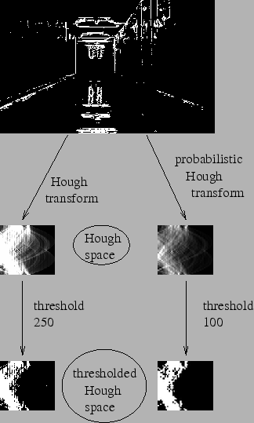

Hough Line Transform
Goal
In this chapter,
- We will understand the concept of the Hough Transform.
- We will see how to use it to detect lines in an image.
- We will see the following functions: cv2.HoughLines(), cv2.HoughLinesP()
Theory
The Hough Transform is a popular technique to detect any shape, if you can represent that shape in a mathematical form. It can detect the shape even if it is broken or distorted a little bit. We will see how it works for a line.
A line can be represented as \(y = mx+c\) or in a parametric form, as \(\rho = x \cos \theta + y \sin \theta\) where \(\rho\) is the perpendicular distance from the origin to the line, and \(\theta\) is the angle formed by this perpendicular line and the horizontal axis measured in counter-clockwise (That direction varies on how you represent the coordinate system. This representation is used in OpenCV). Check the image below:

So if the line is passing below the origin, it will have a positive rho and an angle less than 180. If it is going above the origin, instead of taking an angle greater than 180, the angle is taken less than 180, and rho is taken negative. Any vertical line will have 0 degree and horizontal lines will have 90 degree.
Now let’s see how the Hough Transform works for lines. Any line can be represented in these two terms, \((\rho, \theta)\). So first it creates a 2D array or accumulator (to hold the values of the two parameters) and it is set to 0 initially. Let rows denote the \(\rho\) and columns denote the \(\theta\). Size of array depends on the accuracy you need. Suppose you want the accuracy of angles to be 1 degree, you will need 180 columns. For \(\rho\), the maximum distance possible is the diagonal length of the image. So taking one pixel accuracy, the number of rows can be the diagonal length of the image.
Consider a 100x100 image with a horizontal line at the middle. Take the first point of the line. You know its (x,y) values. Now in the line equation, put the values \(\theta = 0,1,2,....,180\) and check the \(\rho\) you get. For every \((\rho, \theta)\) pair, you increment value by one in our accumulator in its corresponding \((\rho, \theta)\) cells. So now in accumulator, the cell (50,90) = 1 along with some other cells.
Now take the second point on the line. Do the same as above. Increment the values in the cells corresponding to (rho, theta) you got. This time, the cell (50,90) = 2. What you actually do is voting the \((\rho, \theta)\) values. You continue this process for every point on the line. At each point, the cell (50,90) will be incremented or voted up, while other cells may or may not be voted up. This way, at the end, the cell (50,90) will have maximum votes. So if you search the accumulator for maximum votes, you get the value (50,90) which says, there is a line in this image at a distance 50 from the origin and at angle 90 degrees. It is well shown in the below animation (Image Courtesy: Amos Storkey)

This is how hough transform works for lines. It is simple, and may be you can implement it using Numpy on your own. Below is an image which shows the accumulator. Bright spots at some locations denote they are the parameters of possible lines in the image. (Image courtesy: Wikipedia)

Hough Transform in OpenCV
Everything explained above is encapsulated in the OpenCV function, cv2.HoughLines(). It simply returns an array of :math:(rho, theta)` values. \(\rho\) is measured in pixels and \(\theta\) is measured in radians. First parameter, Input image should be a binary image, so apply threshold or use canny edge detection before applying hough transform. Second and third parameters are \(\rho\) and \(\theta\) accuracies respectively. Fourth argument is the threshold, which means the minimum vote it should get to be considered as a line. Remember, number of votes depends upon the number of points on the line. So it represents the minimum length of line that should be detected.
import cv2 import numpy as np img = cv2.imread('../data/sudoku.png') gray = cv2.cvtColor(img,cv2.COLOR_BGR2GRAY) edges = cv2.Canny(gray,50,150,apertureSize = 3) lines = cv2.HoughLines(edges,1,np.pi/180,200) for line in lines: rho,theta = line[0] a = np.cos(theta) b = np.sin(theta) x0 = a*rho y0 = b*rho x1 = int(x0 + 1000*(-b)) y1 = int(y0 + 1000*(a)) x2 = int(x0 - 1000*(-b)) y2 = int(y0 - 1000*(a)) cv2.line(img,(x1,y1),(x2,y2),(0,0,255),2) cv2.imwrite('houghlines3.jpg',img)
Check the results below:

Probabilistic Hough Transform
In the hough transform, you can see that even for a line with two arguments, it takes a lot of computation. Probabilistic Hough Transform is an optimization of the Hough Transform we saw. It doesn’t take all the points into consideration. Instead, it takes only a random subset of points which is sufficient for line detection. Just we have to decrease the threshold. See image below which compares Hough Transform and Probabilistic Hough Transform in Hough space. (Image Courtesy : Franck Bettinger’s home page)
OpenCV implementation is based on Robust Detection of Lines Using the Progressive Probabilistic Hough Transform by Matas, J. and Galambos, C. and Kittler, J.V. [55]. The function used is cv2.HoughLinesP(). It has two new arguments.
- minLineLength - Minimum length of line. Line segments shorter than this are rejected.
- maxLineGap - Maximum allowed gap between line segments to treat them as a single line.
Best thing is that, it directly returns the two endpoints of lines. In previous case, you got only the parameters of lines, and you had to find all the points. Here, everything is direct and simple.
import cv2 import numpy as np img = cv2.imread('../data/sudoku.png') gray = cv2.cvtColor(img,cv2.COLOR_BGR2GRAY) edges = cv2.Canny(gray,50,150,apertureSize = 3) lines = cv2.HoughLinesP(edges,1,np.pi/180,100,minLineLength=100,maxLineGap=10) for line in lines: x1,y1,x2,y2 = line[0] cv2.line(img,(x1,y1),(x2,y2),(0,255,0),2) cv2.imwrite('houghlines5.jpg',img)
See the results below:

Additional Resources
Exercises